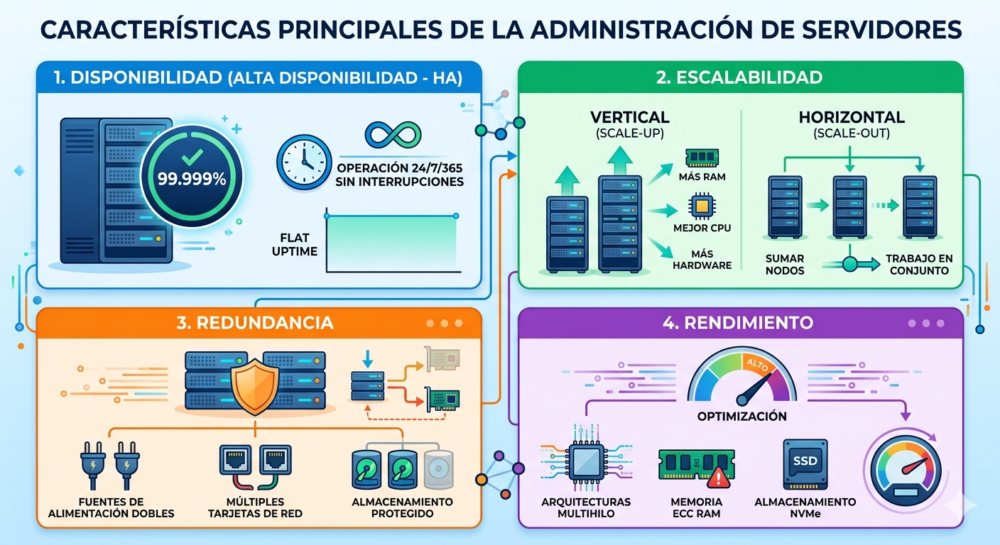
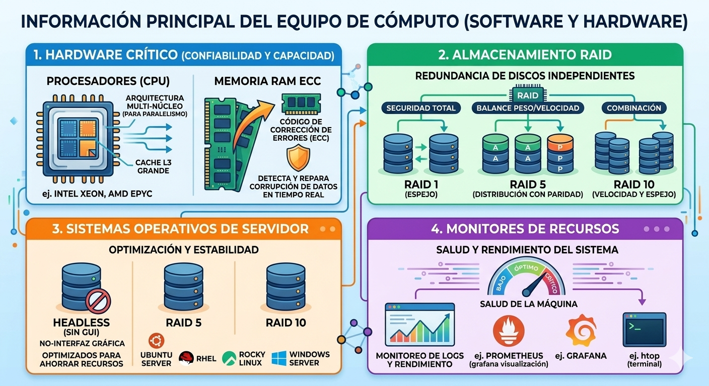
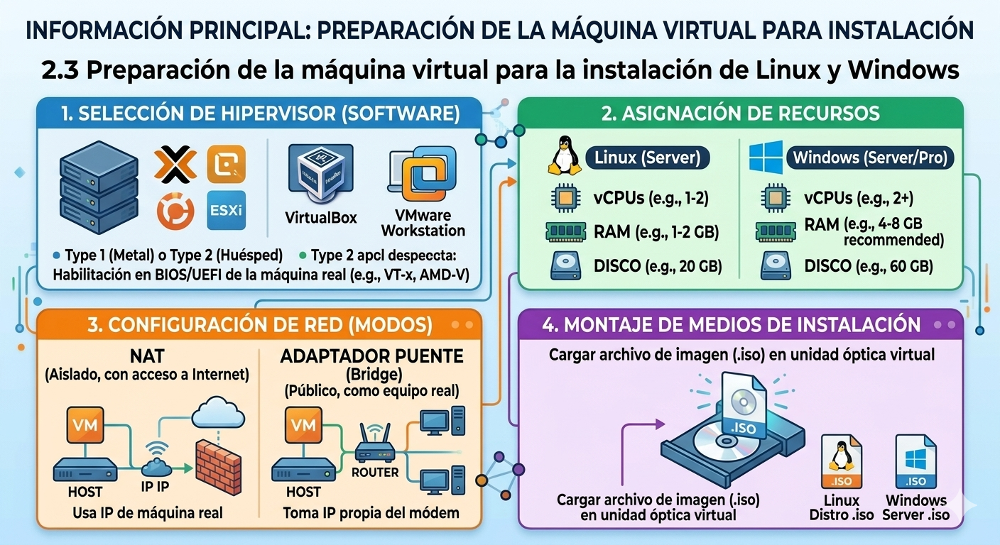
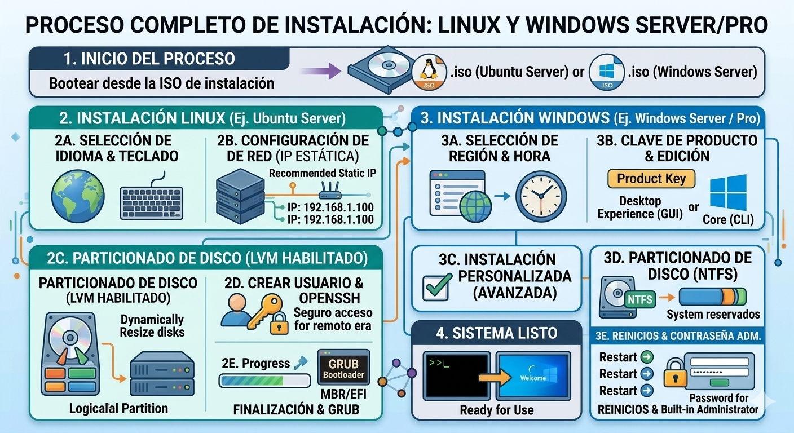
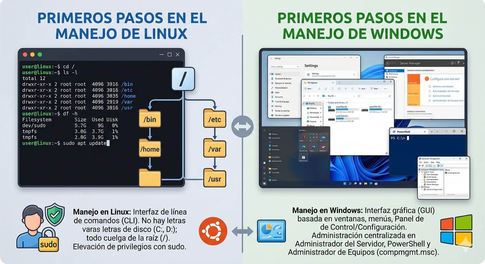
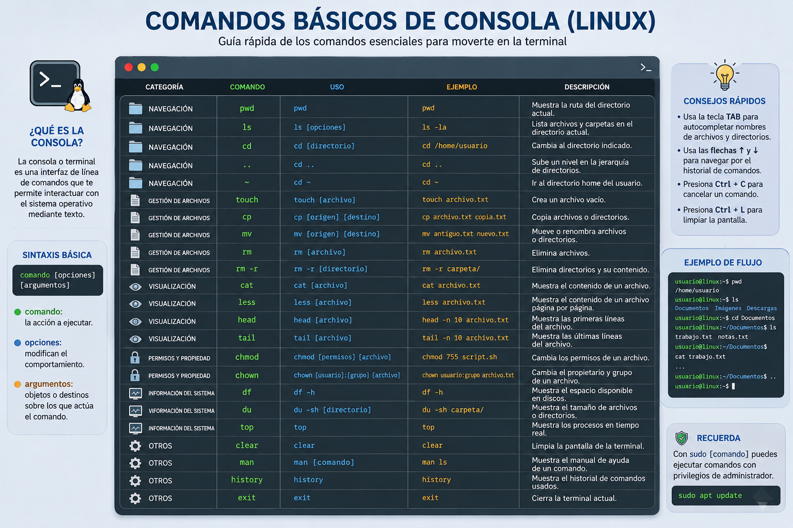

Tema II
Los servidores se clasifican según el rol lógico que desempeñan en una red bajo el modelo cliente-servidor:
Servidor de Archivos: Almacena y gestiona repositorios de datos compartidos en red local mediante protocolos como SMB/CIFS (Windows) o NFS (Linux).
Servidor de Base de Datos: Ejecuta motores de bases de datos (MySQL, PostgreSQL, Oracle) para procesar consultas estructuradas (SQL) de manera optimizada y concurrente.
Servidor de Correo (Mail Server): Gestiona el envío, recepción y almacenamiento de e-mails usando protocolos como SMTP (envío), IMAP y POP3 (recepción).
Servidor DNS (Domain Name System): Traduce nombres de dominio legibles (ej. google.com) en direcciones IP numéricas.
Servidor DHCP (Dynamic Host Configuration Protocol): Asigna de forma dinámica y automática direcciones IP y configuraciones de red a los dispositivos de una infraestructura.
Servidor Web: Despacha contenido de hipertexto (HTML, CSS, JS) a los navegadores mediante solicitudes HTTP/HTTPS.
¿CUÁLES SON?
Disponibilidad (Alta disponibilidad - HA): Diseñados para operar de forma ininterrumpida (24/7/365). Se mide en porcentaje de actividad (ej. "cinco nueves" o 99.999% de tiempo en línea).
Escalabilidad: Capacidad de absorber mayor carga de trabajo. Puede ser Vertical (Scale-up), añadiendo más hardware a la máquina actual (más RAM, mejor CPU); o Horizontal (Scale-out), sumando nodos o servidores a la red para trabajar en conjunto.
Redundancia: Duplicación de componentes críticos para evitar puntos únicos de fallo. Incluye fuentes de alimentación dobles, múltiples tarjetas de red (NIC Teaming) y almacenamiento protegido contra fallos de discos.
Rendimiento: Optimización del procesado físico. Se logra mediante arquitecturas multihilo, memorias con corrección de errores (ECC RAM) y almacenamiento de estado sólido de alta velocidad (NVMe).

Hardware Crítico:
Procesadores (CPU): Arquitecturas multi-núcleo optimizadas para paralelismo (ej. Intel Xeon, AMD EPYC) con grandes cantidades de memoria caché L3.
Memoria RAM ECC: Memoria con código de corrección de errores. Detecta y repara la corrupción de datos en tiempo real antes de que provoquen un reinicio del sistema.
Almacenamiento RAID: Redundancia de discos independientes.
Configuraciones comunes: RAID 1 (Espejo, seguridad total), RAID 5 (Distribución con paridad, balance peso/velocidad) o RAID 10 (Velocidad y espejo combinados).
Software Esencial:
Sistemas Operativos de Servidor: Distribuciones sin interfaz gráfica (Headless) optimizadas para ahorrar recursos, como Ubuntu Server, Red Hat Enterprise Linux (RHEL), Rocky Linux o Windows Server.
Monitores de Recursos: Software para medir logs, rendimiento y salud de la máquina (ej. Prometheus, Grafana, htop).

El hipervisor (Type 2 como VirtualBox o VMware Workstation; o Type 1 como Proxmox o ESXi) requiere configuraciones específicas previas:
Asignación de Recursos:
Linux (Server): Mínimo 1-2 vCPUs, 1-2 GB de RAM, 20 GB de disco.
Windows (Server/Pro): Mínimo 2 vCPUs, 4 GB de RAM (8 GB recomendado), 60 GB de disco.
Habilitación de Virtualización Física: Activar VT-x (Intel) o AMD-V en la BIOS/UEFI de la máquina real.
Configuración de Red:
NAT: Permite salir a internet a la máquina virtual usando la IP de la máquina real (aislada del exterior).
Adaptador Puente (Bridge): La máquina virtual toma una IP propia directamente del módem/router local, comportándose como un equipo físico real más en la red.
Montaje de Medios: Cargar el archivo de imagen de instalación (.iso) en la unidad óptica virtual de la máquina.

Proceso en Linux (Ej. Ubuntu Server):
1.- Bootear desde la ISO. Seleccionar idioma y distribución de teclado.
2.- Configurar la red (IP estática recomendada para servidores o DHCP).
3.- Particionado de disco: Elegir guiado o manual con LVM (Logical Volume Manager) para redimensionar discos en el futuro de forma dinámica.
4.- Crear cuenta de usuario administrador y habilitar la instalación del servidor OpenSSH (esencial para administración remota).
5.- Finalizar la descarga de paquetes e instalar el cargador de arranque GRUB en el Master Boot Record (MBR) o partición EFI.
Proceso en Windows (Ej. Windows Server / Windows 10/11):
1.- Iniciar el instalador.
2.- Seleccionar idioma, región y formato de hora.
3.- Introducción de clave de producto o selección de edición (Elegir Experiencia de escritorio si se requiere interfaz gráfica, o Core para instalación limpia por comandos).
4.- Aceptar términos de licencia y elegir instalación Personalizada (Avanzada).
5.- Particionar el disco (el sistema formateará por defecto en sistema de archivos NTFS y creará particiones reservadas).Copia de archivos, reinicios sucesivos y asignación obligatoria de contraseña para la cuenta integrada de Administrador.

Manejo en Linux:
Se interactúa mediante la interfaz de línea de comandos (CLI). No existe el concepto de "Letras de disco" (C:, D:); todo cuelga de la raíz del sistema representada por una barra inclinada (/). La administración se realiza elevando privilegios con el comando sudo.
Manejo en Windows:
Interfaz gráfica tradicional basada en ventanas, menús contextuales y el Panel de Control / Configuración. La administración se centraliza en el Administrador del Servidor (en versiones Server) o mediante consolas avanzadas como PowerShell y el Administrador de Equipos (compmgmt.msc).

